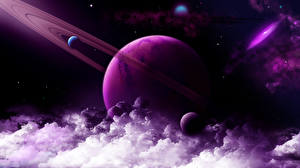

"Космос" по-гречески - это порядок, устройство, стройность (вообще, нечто упорядоченное). Философы Древней Греции понимали под словом "космос" Мироздание, рассматривая его как упорядоченную гармоничную систему. Космосу противопоставлялся беспорядок, хаос. Для древних греков понятия порядка и красоты в явлениях природы были тесно связаны. Эта точка зрения держалась в философии и науке долго; недаром даже Коперник считал, что орбиты планет должны быть окружностями лишь потому, что окружность красивее эллипса.
В понятие "космос" сначала включали не только мир небесных светил, но и все, с чем мы сталкиваемся на поверхности Земли. Знаменитый естествоиспытатель XIX в. Александр Гумбольдт создал фундаментальный труд "Космос" (5 томов, 1845-62), суммировавший все, что тогда было известно о природе .

Чаще под космосом понимают Вселенную, рассматриваемую как нечто единое, подчиняющееся общим законам. Отсюда происходит название космологии - науки, пытающейся найти законы строения и развития Вселенной как целого. Таким образом, в названиях "космогония" и "космология" космос понимается в разном смысле.
С начала космической эры (с 1957 г., когда в СССР был запущен первый спутник) слово "космос" приобрело еще одно значение, связанное с осуществлением давнишней мечты человечества о космических полетах. В таких терминах, как "космический полет" или "космонавтика", космос противопоставляется Земле.
В современном понимании космос есть все находящееся за пределами Земли и ее атмосферы. Иногда говорят "космическое пространство"; в странах, пользующихся английским языком - "внешнее пространство" (outer space) или даже просто "пространство" (space).
Для современного этапа развития наук о космосе характерно колоссальное нарастание потока поступающей информации. Если раньше астрономические приборы воспринимали только видимый свет, то теперь данные о космосе получают из анализа всего электромагнитного спектра. Значит, информацию о физических процессах в межзвездной среде дает изучение первичных космических лучей. Удалось обнаружить всепроникающие частицы нейтрино, приходящие от Солнца. В перспективе возможно обнаружение и изучение нейтрино из глубин космоса. Расширение каналов поступления информации связано как с выходом средств наблюдения в космос (внеатмосферная и баллонная астрономия, непосредственные исследования Луны и планет приборами, доставленными на их поверхность), так и с усовершенствованием наземной аппаратуры.